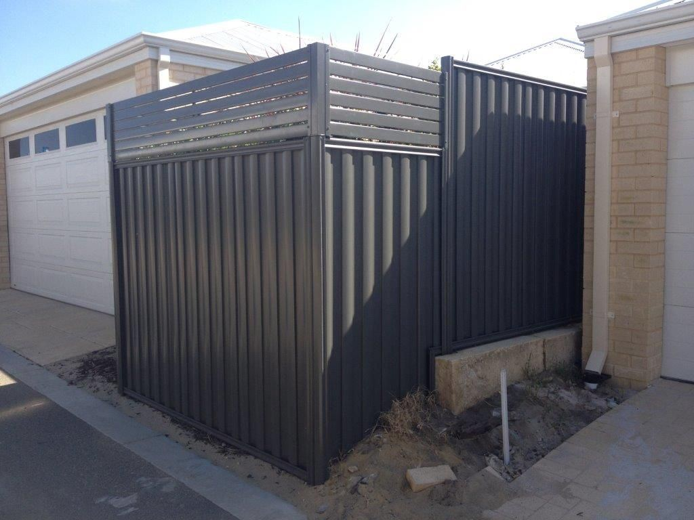
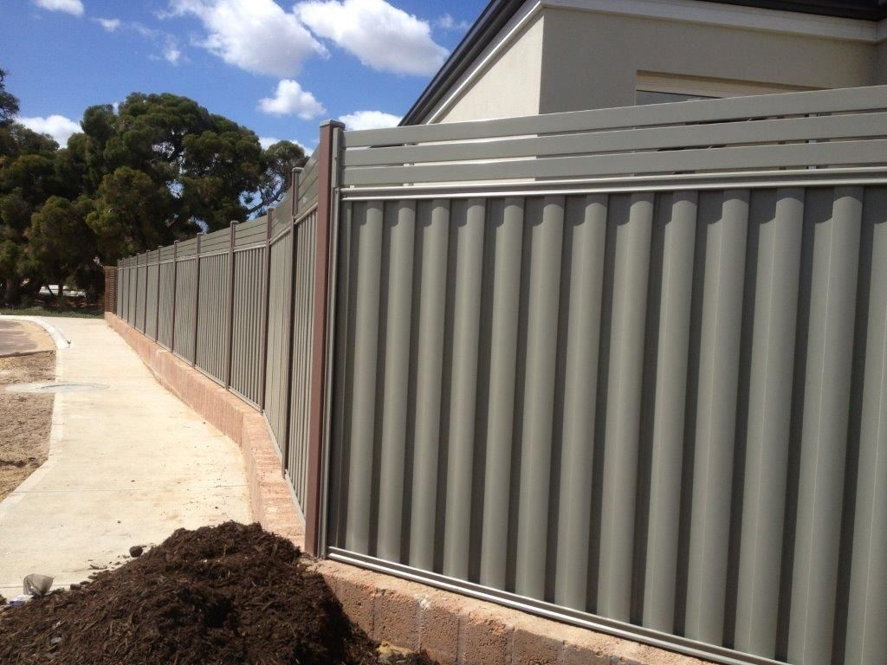
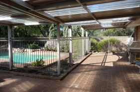

Home / Services
ServicesComplete Colorbond fencing solutions in Perth
When it comes to quality fences and gates, you can’t go past Fencing Finesse.
We are proudly lining the streets of Perth with safe and attractive fences and gates for all purposes. We will expertly install fences to suit any requirements and in a wide range of products and styles. From batten fencing to open style pool fencing, we have you covered.

Colorbond & batten fencing
We specialise in a wide range of fencing options in and around Perth. Batten fencing and gates are durable and come in a wide range of styles to suit your home.
For a complete fencing solution, contact us today.

Pool & safety
A safety fence is absolutely essential if you have a pool. Safety fences can keep children away from dangerous pool areas, ensuring that your neighbourhood is safe.
When it comes to safety, make sure you choose the best quality fences and gates available in Perth from Fencing Finesse.

Home & garden
When choosing a fence to surround your home and garden, you need one that suits the colour and style. We have a great range of fences that can enhance the look of your home. You can also count on them to increase security and privacy.
Contact us in Perth for a quote today.

Fencing repairs
We cover all aspects of fencing, from manufacturing to installation and repairs. Our fencing repairs service covers a wide range of fencing materials and is an economical option when purchasing a new fence is out of your financial reach.
About our team →Free measure & quote
Talk to one of our friendly fencing experts about batten gates, batten fencing, Colorbond gates, pool fencing or repairs.